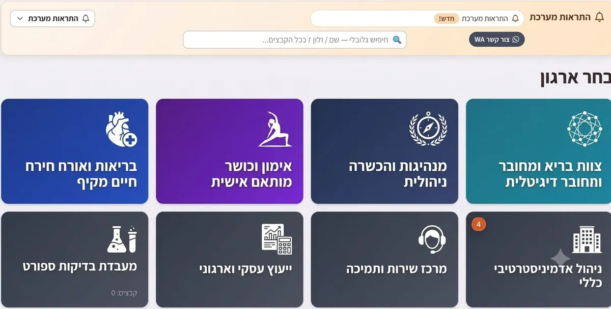

רישיון שפג בלי שמישהו שם לב. חוזה שהתחדש אוטומטית בתנאים פחות טובים כי אף אחד לא זכר לבדוק. מסמך קריטי שנעלם אי שם בין תיקיות מקומיות, מייל ו-WhatsApp. כל בעל עסק מכיר לפחות סיפור אחד כזה — וברוב המקרים הבעיה לא היא שאין איפה לשמור קבצים, אלא שאין מערכת ניהול מסמכים לעסק שבאמת עוקבת אחריהם במקום רק לאכסן אותם.
למה תיקיות ומיילים לא מספיקים
הבעיה היא לא שאין איפה לשמור קבצים — יש יותר מדי מקומות. כשמסמך יכול להיות בתיקייה על המחשב, בקובץ מצורף למייל ישן, או בהודעת וואטסאפ, אין דרך אמיתית לדעת מה המסמך העדכני והנכון בזמן שצריך אותו. גם כלים כלליים כמו Google Drive או Dropbox פותרים רק את חלק האחסון: הם שומרים את הקובץ, אבל לא יודעים שיש בו תוקף, לא מתריעים כשההסכם מתקרב לסיום, ולא מבדילים בין מי שצריך לראות אותו לבין מי שלא. בעל עסק קטן, בניגוד לארגון גדול, לא מחזיק צוות תפעול שתפקידו לעבור אחת לחודש על כל התיקיות ולבדוק מה עומד לפוג. כך שהתוקף פשוט נגלה ברגע שמישהו צריך את המסמך ומגלה שהוא לא בתוקף — לרוב לקוח, רשות או ספק.
הפתרון: FileManager — מערכת שעוקבת, לא רק מאחסנת
בדיוק בשביל הפער הזה בנינו ב-A.L Systems, בניהולו של אדיר לוי משדרות, את FileManager — מערכת לניהול מסמכים לעסק שמרכזת כל קובץ קריטי במקום אחד מסודר, עם התראות תוקף אוטומטיות לפני שרישיון פג, חוזה מסתיים או מסמך חסר. הרעיון הוא לא להחליף את מקום האחסון הקיים, אלא להוסיף שכבה שמנהלת את החיים של המסמך — ממועד ההעלאה ועד למועד שהוא דורש טיפול.

- מאגר מסודר לפי לקוח, פרויקט או צוות — לא לפי תיקייה אישית של מישהו, כך שכל מי שמחליף תפקיד או עוזב לא לוקח איתו את הארגון של הקבצים.
- התראות אוטומטיות על תוקף, חידוש ומסמכים חסרים — המערכת מודיעה מראש, לא ברגע שמאוחר מדי.
- חיפוש מהיר בתוך תוכן הקבצים — לא רק לפי שם הקובץ, כך שאפשר למצוא מסמך לפי שם לקוח או מספר הסכם שמופיע בתוכו.
- הרשאות גישה מדויקות לפי משתמש — כל אחד רואה רק את מה שרלוונטי לו, בלי לסנן ידנית מה לשלוח למי.
דוגמה: משרד תיווך עם עשרות חוזי שכירות פעילים
משרד תיווך קטן מנהל בכל רגע נתון עשרות חוזי שכירות, אישורי ביטוח ותצהירים — חלקם עם תוקף של שנה, חלקם מתחדשים אוטומטית אם לא מבטלים בזמן. לפני FileManager, המעקב התבסס על תזכורות ביומן שלא תמיד הוזנו, וגילוי שחוזה הולך להתחדש בתנאים ישנים קרה בדרך כלל יום-יומיים לפני המועד הקריטי. אחרי שהחוזים עברו למערכת עם תאריכי תוקף מוגדרים, ההתראה הראשונה יוצאת חודש מראש, ושנייה כשבועיים לפני — כך שיש זמן אמיתי לבדוק תנאים מול השוכר או המשכיר ולא רק לאשר אוטומטית מה שכתוב.
מה עדיף: עוד שירות אחסון, או מערכת שמתריעה
העברת קבצים מתיקיות מקומיות לשירות אחסון בענן היא שלב חשוב, אבל היא פותרת רק את השאלה "איפה הקובץ נמצא" — לא את השאלה "מה קורה לקובץ הזה בעוד חודש". עסק שמחפש רק מקום לשמור בו קבצים ייתקל בבעיה הבאה: הקבצים מאורגנים, אבל אף אחד לא יודע שמשהו צריך טיפול עד שזה כבר קרה. מערכת עם התראות תוקף הופכת את השאלה מ"איפה זה" ל"מה צריך לקרות עד איזה תאריך" — וזה ההבדל שבאמת מונע נזק.
מערכת ניהול מסמכים חינם — מתי זה מספיק ומתי לא
הרבה עסקים מתחילים בחיפוש של "מערכת ניהול מסמכים חינם", ובצדק: לחלק גדול מהצרכים יש כלים חינמיים טובים. Google Drive, OneDrive ו-Dropbox נותנים אחסון, שיתוף וחיפוש בסיסי בלי עלות, ולעסק שצריך בעיקר מקום מסודר לקבצים — זה מספיק. הגבול מגיע ברגע שיש לכם מסמכים שיש להם תאריך: רישיון עסק, אישור ביטוח, חוזה שמתחדש אוטומטית, תעודת כשירות של עובד. כלי אחסון חינמי לא יודע שהמסמך הזה פג בעוד שלושה שבועות, ולא יגיד לכם. את המחיר של זה לא רואים בחשבונית החודשית, אלא ביום שבו מתגלה שהביטוח לא חודש או שהחוזה התחדש בתנאים הישנים.
כלל אצבע פשוט: אם כל המסמכים שלכם סטטיים — מספיק כלי חינמי. אם יש לכם יותר מכמה מסמכים עם תוקף, או כמה אנשים שאחראים על מסמכים שונים, כדאי מערכת שמנהלת את התוקף ולא רק את הקובץ. אפשר גם לשלב: להשאיר את הקבצים השוטפים בכלי הקיים, ולהעביר למערכת ייעודית רק את המסמכים הקריטיים.
ניהול מסמכים אלקטרוני מול ארכיון דיגיטלי
שני המונחים מתערבבים, אבל הם פותרים בעיות שונות. ארכיון דיגיטלי הוא המקום שבו נשמרים מסמכים שהעבודה עליהם הסתיימה — סריקות של ניירת ישנה, חשבוניות משנים קודמות, תיקי לקוחות סגורים. המטרה שלו היא שאפשר יהיה למצוא מסמך כשצריך, ושום דבר לא ילך לאיבוד. ניהול מסמכים אלקטרוני עוסק במסמכים חיים: מי אחראי על המסמך, עד מתי הוא בתוקף, מי רשאי לראות אותו, ומה צריך לקרות לפני שהוא פג. מעבר מניירת למסמכים דיגיטליים פותר את בעיית האחסון והחיפוש, אבל לא את בעיית המעקב. ברוב העסקים הנזק לא נגרם בארכיון — הוא נגרם במסמך החי שאף אחד לא שם לב שהוא עומד לפוג.
למה זה קריטי דווקא בעסק קטן
בארגון גדול יש לרוב מחלקה משפטית או מנהל תפעול שעוקב אחרי חוזים ורישיונות כחלק מהעבודה השוטפת. בעסק קטן בעל העסק הוא זה שאמור לזכור את כל זה, לצד כל שאר התפקידים שהוא ממלא. ברגע שהמעקב עובר למערכת אוטומטית, לא צריך לזכור — המערכת מזכירה.
הפער בין "יש לנו קבצים מאורגנים" לבין "אנחנו יודעים לפני שמשהו פג" הוא ההבדל בין ניהול מסמכים לבין ניהול סיכונים.
מי צריך לראות מה
לא כל עובד צריך גישה לכל מסמך. הרשאות מדויקות לפי משתמש או צוות שומרות על סדר ועל פרטיות, בלי לסבך את מי שבאמת צריך גישה מהירה — ובלי לחשוף מסמכים רגישים, כמו חוזי שכר או הסכמים פיננסיים, למי שלא נדרש להם.